Стандарт ECMAScript 5
Разработка динамичесих веб приложений
Гладкий Максим Валерьевич / github:MaksHladki
Содержание лекции
Строгий режим
(strict mode)
Особенности
- Более строгий вариант JavaScript
- Семантика, отличающаяся от обычно принятой
- Старые версии браузеров игнорируют строгий режим (IE 9-)
- Отменить действие use strict нельзя
- Применяется ко всему скрипту или к отдельным функциям
- Скрипт в строгом режиме + скрипт в обычном = скрипт в строгом режиме
Строгий режим для всего скрипта
"use strict";
myFunction();
function myFunction() {
y = 3.14;
}
Строгий режим для функции
var PI = 3.14;
myFunction();
function myFunction() {
"use strict";
var y = 3.14;
}
Правила игры

Дублирование ключей в объекте
var colors = {
red: '#FF0000',
green: '#00FF00',
blue: '#0000FF',
red: '#FF0000'
};
//Ex: An object literal cannot have multiple
//properties with the same name in strict mode.
Объявление переменных без var
PI = 3.14;
//EX: PI is not defined
Дублирование аргументов функции
function log(arg, arg) {
console.log(arguments);
}
log(1, 2, 4);
//EX: Duplicate parameter name not allowed in this context
Удаление "стандартных" свойств
delete Object.prototype;
//Ex: Cannot delete property 'prototype' of function Object()
Eval не добавляет новых переменных в окружающий контекст
var x = 17;
var evalX = eval("var x = 42;x");
console.log(x); //17
console.log(evalX); //42
Нельзя использовать with
var x = 17;
with (obj)
{
x;
}
//Ex: syntax error
Область видимости функций и замыкания
Глобальный объект window
В JavaScript все глобальные переменные и функции являются свойствами специального объекта, который называется « глобальный объект » (global object).
В браузере этот объект доступен под именем window.
Объект window одновременно является глобальным объектом и содержит ряд свойств и методов для работы с окном браузера.
Oбъект window: свойства и методы

Oбъект window: свойства и методы
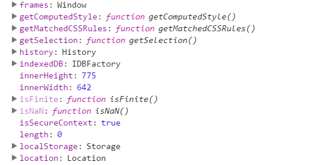Oбъект window: чтение/запись
var browser = 'Chrome';
console.log(window.browser); //Chrome
window.browser = 'Opera';
console.log(window.browser); //Opera
Порядок выполнения JS-скрипта
- Инициализация, подготовка к запуску
- Выполнение
Пример
// window = { f: function, log: undefined, browser: undefined }
var browser = 'Chrome';
// window = { f: function, log: undefined, browser: 'Chrome' }
var log = function (msg) {
console.log(msg);
}
// window = { f: function, log: function, browser: 'Chrome' }
function f() {}
Свойства глобальной области видимости
- Конструкции for, if... не влияют на видимость
- Повторное oбъявление переменных
- Особенности при работе с window в IE8-
for, while, if... не влияют на видимость
var i;
for (i = 0; i < N; i++) {}
for (var i = 0; i < N; i++) {}
Повторное объявление переменных
var i = 0;
while (i < N) {}
var i = 100;
var res = N * i;
Лексическая область видимости
- Функции имеют не динамическую, а лексическую область видимости
- Вложенная функция обладает возможностью доступа ко всем аргументам и локальным переменным объемлющей функции
- Все переменные внутри функции – это свойства специального внутреннего объекта LexicalEnvironment
Пример
function logger(msg) {
//LexicalEnvironment = { msg: 'Test', date: undefined}
var date = new Date().toDateString();
//LexicalEnvironment = { msg: 'Test', date: 'Sun Oct 30 2016'}
console.log(date + ' : ' + msg);
}
logger('Test');
Свойства LexicalEnvironment
- Объект LexicalEnvironment является внутренним
- Объект скрыт от прямого доступа
- Интерпретатор сначала пытается найти переменную в текущем LE, а затем – во внешнем объекте переменных
- Cсылка на внешний объект переменных хранится в специальном внутреннем свойстве [[Scope]]
- При создании функция получает [[Scope]], которое ссылается на LE, в котором она создана
logger.[[Scope]] = window;
Как так-то

...простыми словами
- Функция при создании получает ссылку [[Scope]] на объект с переменными, в контексте которого создана
- При запуске функции создаётся новый объект с переменными LexicalEnvironment
- При поиске переменных он осуществляется сначала в текущем объекте переменных, а потом – по этой ссылке ===
- Функция читает переменные снаружи
Доступ к внешним переменным
var date = new Date().toDateString();
function logger(msg) {
//LexicalEnvironment = { msg: 'Test', date: 'Sun Oct 30 2016'}
console.log(date + ' : ' + msg);
}
logger('Test');
Всегда текущее значение
var date = new Date().toDateString();
function logger(msg) {
console.log(date + ' : ' + msg);
}
logger('Test'); //Sun Oct 30 2016 : Test
date = '30.10.2016'
logger('Test 2'); //30.10.2016 : Test 2
Немного усложним
function makeCounter() {
var currentCount = 1;
return function () {
return currentCount++;
};
}
var counter = makeCounter();
//каждый вызов увеличивает счётчик и возвращает результат
console.log(counter()); // 1
console.log(counter()); // 2
console.log(counter()); // 3
//если создать другой счётчик, он будет независим от первого
var counter2 = makeCounter();
console.log(counter2()); // 1
new Function
window.a = 1;
function getFunc() {
var a = 2;
var func = new Function('', 'alert(a)');
return func;
}
getFunc()();// 1
Итого
Замыкание – это функция вместе со всеми внешними переменными, которые ей доступны
- Значение переменной из внешней области берётся всегда текущее
- Переменную во внешней области видимости можно не только читать, но и изменять
- При создании функции с использованием new Function, [[Scope]] ссылается на window
Проверка знаний
var counter = 5;
var add = (function () {
var counter = 0;
return function () {
return counter += 1;
}
})();
add();
add();
console.log(add());//???
counter = 3
ООП в JavaScript
- ООП в функциональном стиле
- ООП в прототипном стиле
Стандартные объекты
| Array | массив пронумерованных элементов |
| Boolean | объект для булевых значений |
| Date | функции для работы с датой и временем |
| Error | объект для представления ошибок |
| Function | каждая функция в JS является объектом класса Function. |
| JSON | содержит методы для разбора объектной нотации JS |
| Math | константы и методы для математических вычислений. |
| Number | объект для работы с числами |
| Object | базовый объект javascript |
| RegExp | позволяет работать с регулярными выражениями. |
| String | управление, форматирование и другие операции с текстовыми строками |
| SyntaxError | ошибка при интерпретации синтаксически неверного кода |
| window | опредлеяет глобальный объект и окно браузера |
ОПП в функциональном стиле
Определение конструктора
function Person(name, age){
this.name = name;
this.age = age;
this.getName = function(){
return this.name;
}
this.getAge = function(){
return this.age;
}
}
Пример создания экземпляра
var person = new Person('Max', 18);
console.log(person.getName());//Max
console.log(person.getAge()); //18
console.log(person instanceof Object);//true
console.log(person instanceof Person);//true
Особенности
- Имена конструкторов всегда начинаются с прописной буквы
- Объект явно не создается
- Свойства и метод назначаются непосредственно объекту this
- Для создания экземпляров используется оператор new
- Инструкция return отсутствует
Порядок создания экземпляра
- Создание объекта
- Назначение нового объекта переменной this конструктора (после чего this указывает на новый объект)
- Выполнение кода внутри конструктора (добавление свойств к новому объекту)
- Возвращение нового объекта
Проблемы конструкторов

Методы создаются для каждого экземпляра
function Person(name, age) {
this.name = name;
this.age = age;
this.getName = new Function('return this.name;');
}
var p1 = new Person('Ira', 23);
var p2 = new Person('Max', 25);
console.log(p1.getName());//Ira
console.log(p2.getName());//Max
console.log(p1.getName == p2.getName); //false
Методы создаются для каждого экземпляра
function Person(name, age) {
this.name = name;
this.age = age;
this.getName = function() {
return this.name;
}
}
var p1 = new Person('Ira', 23);
var p2 = new Person('Max', 25);
console.log(p1.getName()); //Ira
console.log(p2.getName()); //Max
console.log(p1.getName == p2.getName); //false
Hot Fix
function Person(name, age) {
this.name = name;
this.age = age;
this.getName = getName
}
function getName(){
return this.name;
}
var p1 = new Person('Ira', 23);
var p2 = new Person('Max', 25);
console.log(p1.getName == p2.getName); //true
Внутренний и внешний интерфейс
Публичное и приватное свойство
function Person(name, age) { var fAge = 'лет'; this.name = name; this.getAge = function(){ return age + ' ' + fAge; } } var person = new Person('Max', 20); person.name = 'Maxim'; console.log(person.name);//Maxim console.log(person.getAge());//20 лет
Внутренний и внешний интерфейс
Публичный и приватный метод
function Person(name, age) { this.name = name; this.getAge = function(){ return formatAge(age); } function formatAge(age){ return age + ' лет'; } } var person = new Person('Max', 20); console.log(person.formatAge);//undefined console.log(person.getAge());//20 лет
Сохранение this в замыкании
function Person(name, age) {
this.age = age;
this.printAge = function () {
setTimeout(console.log(formatAge()), 1000);
}
function formatAge() {
return this.age + ' лет';
}
}
var person = new Person('Max', 20);
person.printAge(); //undefined лет
Сохранение this в замыкании
function Person(name, age) {
var self = this;
this.age = age;
this.printAge = function(){
setTimeout(console.log(formatAge()), 1000);
}
function formatAge(){
return self.age + ' лет';
}
}
var person = new Person('Max', 20);
person.printAge(); //20 лет
Геттеры и сеттеры
function Person() {
var _age = 0;
this.setAge = function (age) {
if (age <= 0 || age >= 100)
throw "Значение должно быть больше 0 и меньше 100";
_age = age;
}
this.getAge = function () {
return _age;
}
}
var person = new Person();
person.setAge(20);
console.log(person.getAge());//20
person.setAge(100);//Ex. Значение должно быть больше 0 и меньше 100
Наследование
function Person(name, age){
this.name = name;
this.age = age;
this.getName = function(){
return this.name;
}
this.getAge = function(){
return this.age;
}
}
Расширяем
function Student(course, group) {
Person.call(this);
this.course = course;
this.group = group;
}
var student = new Student(1, 1);
student.name = 'Peter';
student.age = 24;
console.log(student.name);//Peter
console.log(student.group);//1
Person.call(this);
Переопределение метода
function Student(course, group) {
Person.call(this);
this.course = course;
this.group = group;
this.getAge = function () {
return this.age + ' лет';
}
}
var student = new Student(1, 1);
student.age = 20;
console.log(student.getAge()); //20 лет
Запомним
THIS в JS не привязывается к объекту, а зависит от контекста вызова. В случае с конструктором this ссылается на созданный экземпляр при условии использования ключевого слова new.
ООП в прототипном стиле
Прототип Proto
var person = {
age: 24,
name: 'Alex'
};
var student = {
course: 1,
group: 6
};
student.__proto__ = person;
console.log(student.age);//24
console.log(student.name);//Alex
Схема

Особенности
- Объекты можно организовать в цепочки (свойство, не найденное в одном объекте, автоматически ищется в другом)
- Свойство __proto__ доступно во всех браузерах, кроме IE10-
- Объект, на который указывает ссылка __proto__, называется «прототипом»
- Все объекты, созданные объектными литералами, имеют прототип Object.prototype
- Объекты, созданные с помощью new и конструктора, имеют в качестве прототипа значение свойства prototype
- Прототип используется только при чтении
Proto: read only
var person = {
age: 24,
name: 'Alex'
};
var student = {
course: 1,
group: 6
};
student.__proto__ = person;
student.age = 10;
console.log(student.age);//10
console.log(person.age);//24
delete student.age;
console.log(person.age);//24
Совйство prototype
- Объекты обычно создаются функцией-конструктором через new
- __proto__ не работает в IE10-
Свойство prototype имеет смысл только у конструктора
var person = {
age: 24,
name: 'Alex'
};
function Student(course, group) {
this.course = course,
this.group = group;
//this.__proto__ = person; не работает в IE10-
};
Student.prototype = person;//!!!
var student = new Student(1, 1);
console.log(student.age);//24
Класс Object
Конструктор
- Object.length имеет значение 1
- Object.prototype позволяет добавлять свойства ко всем объектам типа Object
var o1 = new Object();
console.log(o1);
var o2 = {};
console.log(o2);
Класс Object в разрезе

Объект Object.prototype – вершина иерархии, единственный, у которого __proto__ равно null.
Метод create
var person = {
age: 20
}
var student = Object.create(person);
console.log(student.age);//20
Свойство prototype
function Person(){
this.age = 0;
}
Person.prototype.setAge = function(age){
this.age = age;
}
Person.prototype.getAge = function(){
return this.age;
}
var person = new Person();
person.setAge(100);
console.log(person.getAge());//100
Метод toString
function Person(){
this.age = 0;
}
var person = new Person();
alert(person);//[object Object]
Person.prototype.toString = function(){
return this.age;
}
alert(person);//0
Метод hasOwnProperty
var person = {
age: 24,
name: 'Alex'
};
var student = {
course: 1,
group: 6
};
student.__proto__ = person;
for(var key in student) //course group name age
console.log(key);
hasOwnProperty
var person = {
age: 24,
name: 'Alex'
};
var student = {
course: 1,
group: 6
};
student.__proto__ = person;
for(var key in student) //course group
if(student.hasOwnProperty(key)) console.log(key);
Метод keys
function Person(name) {
this.name = name;
}
Person.prototype.setName = function (name) {
this.name = name;
}
Person.prototype.getName = function () {
return this.name;
}
function Student(course) {
this.course = course;
}
Student.prototype = Object.create(Person.prototype);
var student = new Student(20);
console.log(Object.keys(student));["course"]
Метод defineProperty
function Person(name) {
this.name = name;
}
var person = new Person(20);
Object.defineProperty(person, 'age', {
enumerable: true,
configurable: true,
//writable: true, нельзя использовать совместно с get/set
//value: 0, нельзя использовать совместно с get/set
get: function(){
return age + ' лет';
},
set: function(newAge){
age = newAge;
}
});
person.age = 10;
console.log(person.age);//10
Еще один пример
function Person(name) {
this.name = name;
Object.defineProperty(this, 'age', {
enumerable: false,
configurable: true,
value: 0,
});
}
var person = new Person(20);
console.log(Object.getOwnPropertyNames(person));//["name", "age"]
console.log(Object.keys(person));//["name"]
Наследование
function Person(name) {
this.name = name;
}
Person.prototype.setName = function (name) {
this.name = name;
}
Person.prototype.getName = function () {
return this.name;
}
function Student(course, name) {
Person.call(this, name);
this.course = course;
}
Student.prototype = Object.create(Person.prototype);
Student.prototype.getCourse = function () {
return this.course;
}
var student = new Student(10, 'Anna');
console.log(student.getName());//Anna
Вызов метода родителя
function Person(name) {
this.name = name;
}
Person.prototype.setName = function (name) {
this.name = name;
}
Person.prototype.getName = function () {
return this.name;
}
function Student(name) {
Person.call(this, name);
}
Student.prototype = Object.create(Person.prototype);
Student.prototype.getName = function () {
return 'Name: ' + Person.prototype.getName.call(this);
}
var student = new Student('Anna');
console.log(student.getName());//Name: Anna
Изменение встроенных прототипов
function Person(){
this.age = 0;
}
var person = new Person();
alert(person);//[object Object]
Person.prototype.toString = function(){
return this.age;
}
alert(person);//0
Операторы проверки типов
- typeof
- instanceof
Оператор typeof
function A(){}
function B(){}
B.prototype = Object.create(A.prototype);
console.log(typeof undefined);// "undefined"
console.log(typeof 0);// "number"
console.log(typeof true );// "boolean"
console.log(typeof "foo"); // "string"
console.log(typeof {}); // "object"
console.log(typeof null); // "object"
console.log(typeof function(){}); // "function"
var a = new A();
console.log(typeof a);// "object"
var b = new B();
console.log(typeof b);// "object"
Оператор instanceof
function A(){}
function B(){}
B.prototype = Object.create(A.prototype);
var a = new A();
var b = new B();
console.log(a instanceof A);//true
console.log(b instanceof B);//true
console.log(a instanceof B);//false
console.log(b instanceof A);//true
console.log(a instanceof Object);//true
console.log(b instanceof Object);//true
console.log(A.prototype instanceof Object);//true
console.log(B.prototype instanceof Object);//true
console.log(A.prototype instanceof B);//false
console.log(B.prototype instanceof A);//true
console.log(Object.prototype instanceof Object);//false
Вопрос: как структурировать огромное количество функций и переменных и избежать конфликтов и перезаписи информации?
Пространства имен
function Person() {}
function Student() {}
var some_var = 1;
var module1 = {};
module1.data = {a: 1, b: 2};
var module2 = {};
Простой пример
var MYAPP = {};
MYAPP.Person = function () {};
MYAPP.Student = function () {};
MYAPP.some_var1 = 1;
MYAPP.some_var2 = 2;
MYAPP.modules = {};
MYAPP.modules.modulel = {};
MYAPP.modules.modulel.data = {
a: 1,
b: 2
};
MYAPP.modules.module2 = {};
Применение пространств имен
//применение функции пространства имен
MYAPP.namespace('MYAPP.modules.module2');
//вызов эквивалентен следующей конструкции:
var MYAPP = {
modules: {
module2: {}
}
};
Способ реализации
var MYAPP = MYAPP || {};
MYAPP.namespace = function (namespaceStr) {
var parts = namespaceStr.split('.'),
parent = MYAPP,
i;
// отбросить начальный префикс - имя глобального объекта
if (parts[0] === "MYAPP") {
parts = parts.slice(1);
}
for (i = 0; i < parts.length; i += 1) {
// создать свойство, если оно отсутствует
if (typeof parent[parts[i]] === "undefined") {
parent[parts[i]] = {};
}
parent = parent[parts[i]];
}
return parent;
};
Пример работы
//присваиваение возвращаемого значение локальной переменной
var module2 = MYAPP.namespace('MYAPP.modules.module2');
module2 === MYAPP.modules.module2; // true
//отсутствие начального префикса 'MYAPP'
MYAPP.namespace('modules.module51');
//создание глубоко вложенных пространств имен
MYAPP.namespace('once.upon.a.time.there.was.this.long.nested.property');
Создание библиотек и модулей
;(function () {
//приватные переменные
var version = '0.0.1',
faculties = ['EEF', 'ITF'];
//приватные функции
function Student(name) {
this.name = name;
}
function addStudent(student) {}
function assignStudentToFaculty(student, faculty) {}
//основная функция библиотеки
function bstu(params) {}
//публичные переменные и функции
bstu.Student = Student;
bstu.FACULTY = faculties;
//экспортируем публичные члены наружу из модуля
window.BSTU = bstu;
}());
var student = new BSTU.Student('Max');
console.log(student.name);//Max
this
Доступ к текущему объекту из метода
var student1 = {
course: 3,
print: function(){
console.log(course);
}
};
student1.print();//Ex: Uncaught ReferenceError: course is not defined
var student2 = {
name: 'Max',
print: function(){
console.log(this.name);
}
};
student2.print();//Max
Обращение к объекту по имени переменной
var student2 = {
name: 'Max',
print: function(){
console.log(student2.name);
}
};
student2.print();//Max
Особенности this
Любая функция может иметь в себе this.
function func(){ console.log(this); } func();//[object Window]
Разный контекст
Если одну и ту же функцию запускать в контексте разных объектов, она будет получать разный this. Это значение не зависит от того, как функция была создана, оно определяется в момент вызова
function print (){console.log(this.name);}
var person = {
name: 'Irina',
print: print
};
var student = {
name: 'Ivan',
print: print
};
person.print();//Irina
student.print();//Ivan
Яаное укзание и привязка контекста
- Call
- Apply
- Bind
Метод Call
Вызывает функцию с указанным значением this и предоставленными аргументами.
func.apply(context, [arg1, arg2])
Пример
function showFullName() {
console.log(this.firstName + " " + this.lastName);
}
var user = {
firstName: "Василий",
lastName: "Петров"
};
//this = user
showFullName.call(user) // "Василий Петров"
Метод Apply
Вызывает функцию с указанным значением this и аргументами, предоставленными в виде массива
func.apply(context, [argsArray])
Пример
var x = 10;
var o = { x: 15 };
function f(message)
{
console.log(message);
console.log(this.x);
}
f("test");//test 10
f.apply(o, ["test"]);//test 15
Использование со встроенными функциями
/* мин/макс числа в массиве */
var numbers = [5, 6, 2, 3, 7];
/* используем apply к Math.min/Math.max */
var max = Math.max.apply(null, numbers);
/* Это эквивалентно Math.max(numbers[0], ...)
или Math.max(5, 6, ...) */
var min = Math.min.apply(null, numbers);
Метод Bind
- Cоздаёт новую функцию, которая при вызове устанавливает в качестве контекста выполнения this предоставленное значение.
- Bind не вызывает функцию, он только возвращает «обёртку»
var wrapper = func.bind(context[, arg1, arg2...])
Пример
function f(a, b) {
console.log(this);
console.log(a + b);
}
var g = f.bind("Context");
g(1, 2); // Context 3
Карринг (currying) параметров
Создание новой функции путём фиксирования аргументов существующей (термин из функционального программирования)
function mul(a, b) {
return a * b;
}
// double умножает только на два
var double = mul.bind(null, 2);
// контекст фиксируем null, он не используется
console.log(double(3));// mul(2, 3) = 6
console.log(double(4));// mul(2, 4) = 8
console.log(double(5));// mul(2, 5) = 10
Одалживание метода
function showArgs() {
//arguments.length [0] ... [n]
var argStr = arguments.join(':');
console.log(argStr);
}
showArgs(1, 2, 3);// arguments.join is not a function(…)
function showArgs() {
var join = [].join; // скопируем ссылку на функцию в переменную
// вызовем join с this = arguments,
// этот вызов эквивалентен arguments.join(':')
var argStr = join.call(arguments, ':');
console.log(argStr);
}
showArgs(1, 2, 3);//1:2:3
Объектная модель документа
Структура браузерных объектов
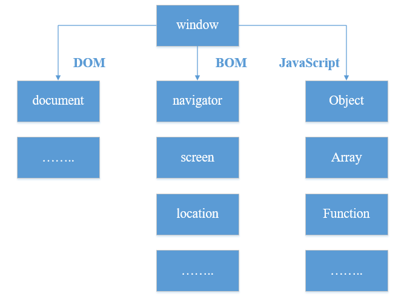Пример DOM-дерева
<!DOCTYPE HTML>
<html>
<head>
<title>Какой-то заголовок</title>
</head>
<body>
Какой-то текст
</body>
</html>
Вид документа
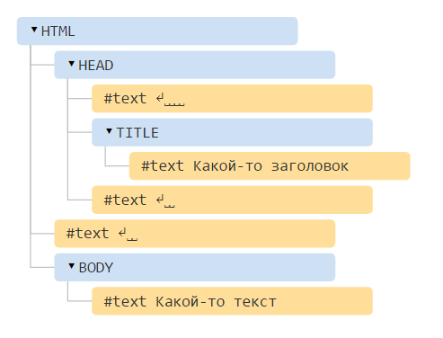Типы узлов в примере
- Теги образуют узлы-элементы (element node). Одни узлы могут быть вложены в другие. Дерево образуется исключительно за счет них
- Текст внутри элементов образует текстовые узлы (text node, #text). Текстовый узел содержит исключительно строку текста и не может иметь потомков, то есть он всегда на самом нижнем уровне
Пробелы и переводы строки – это тоже текст, полноправные символы, которые учитываются в DOM
Типы узлов
interface Node {
// Всевозможные значения nodeType
const unsigned short ELEMENT_NODE = 1;
const unsigned short ATTRIBUTE_NODE = 2;
const unsigned short TEXT_NODE = 3;
const unsigned short CDATA_SECTION_NODE = 4;
const unsigned short ENTITY_REFERENCE_NODE = 5;
const unsigned short ENTITY_NODE = 6;
const unsigned short PROCESSING_INSTRUCTION_NODE = 7;
const unsigned short COMMENT_NODE = 8;
const unsigned short DOCUMENT_NODE = 9;
const unsigned short DOCUMENT_TYPE_NODE = 10;
const unsigned short DOCUMENT_FRAGMENT_NODE = 11;
const unsigned short NOTATION_NODE = 12;
...
}
Навигация по DOM-элементам

Пример
<!DOCTYPE>
<html>
<head>
<title>Navigation</title>
</head>
<body>
<div id="container">
<div class="content">
<div class="title">
<h3>Title 1</h3>
</div>
<div class="message">
<a href="google.com">google</a>
</div>
</div>
<div class="content">
<div class="title">
<h3>Title 2</h3>
</div>
<div class="message">
<img src="https://www.wired.com/wp-content/uploads/2015/09/google-logo-1200x630.jpg" alt="">
</div>
</div>
</div>
<script src="navigation.js"></script>
<script>
var example = new NavigationExample();
example.title();
</script>
</body>
</html>
document.body
Запись запрещена, только чтение

document.head

Только getter, запись без сохранения результата
function head() {
console.log(document.head);
document.head = 'Test
';
console.log(document.head);
}
document.title
Getter + Setter
function title() {
console.log(document.title);//Navigation
document.title = 'Test';
console.log(document.title);//Test
}
document.links

Только getter, запись без сохранения результата
function links(){
console.log(document.links);
document.links = [];
console.log(document.links);
}
document.images
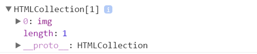Только getter, запись без сохранения результата
function images(){
console.log(document.images);
document.images = [];
console.log(document.images);
}
document.documentElement

console.log(document.documentElement);
//root element in document (html)
Элементы DOM-дерева
Дочерние элементы (дети) – элементы, которые лежат непосредственно внутри данного. Например, внутри <HTML> обычно лежат <HEAD> и <BODY>.
Потомки – все элементы, которые лежат внутри данного, вместе с их детьми, детьми их детей и так далее. То есть, всё поддерево DOM.
Дочерние элементы
- DOM-коллекции не являются JavaScript-массивами
- В них нет методов массивов (forEach, map, push, pop и т.д)
- Нельзя перебирать коллекцию через for..in
- В мире DOM в качестве значения, обозначающего «нет такого элемента» или «узел не найден», используется не undefined, а null.
Расширяем горизонты (forEach для HtmlCollection)
function foreach(){
var collections = document.body.childNodes;
[].forEach.call(collections, function(item, index){
console.log(item);
console.log(index);
});
}
Свойство Node.childNodes

console.log(document.body.childNodes);
Свойство Node.childNodes

console.log(document.body.childNodes[1].childNodes);
Свойство Node.childNodes
for (var i = 0; i < document.body.childNodes.length; i++) {
console.log( document.body.childNodes[i] );
}
var container = document.getElementById('container');
for (var i = 0; i < container.childNodes.length; i++) {
console.log( document.body.childNodes[i] );
}
Свойство Node.firstChild
- Совйство только для чтения
- Возвращающее первый потомок узла в древе или null, если узел является бездетным
- Если узел это документ, он возвращает первый узел в списке своих прямых детей
Свойство Node.firstChild: пример
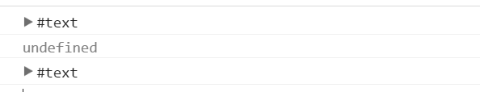
function firstChild() {
console.log(document.body.firstChild);
console.log(document.body.childNodes.firstChild);
console.log(document.body.childNodes[1].firstChild);
}
Свойство Node.lastChild

function firstChild() {
console.log(document.body.lastChild);
console.log(document.body.childNodes.lastChild);
console.log(document.body.childNodes[1].lastChild);
}
Соседние элементы и родительский элемент
- children – только дочерние узлы-элементы, то есть соответствующие тегам
- firstElementChild, lastElementChild – соответственно, первый и последний дети-элементы
- previousElementSibling, nextElementSibling – соседи-элементы
- parentElement – родитель-элемент.
Свойство children
В отличии от childNodes, children удаляет текстовые узлы и комментарии

function children(){
console.log(document.body.children);
console.log(document.body.children[0].children);
}
firstElementChild
Доступное только для чтения свойство ParentNode.firstElementChild возвращает первый дочерный элемент объекта (Element) или null если дочерних элементов нет

function firstElementChild(){
console.log(document.body.firstElementChild);
console.log(document.body.childNodes.firstElementChild);
console.log(document.body.childNodes[1].firstElementChild);
}
lastElementChild
Доступное только для чтения свойство ParentNode.firstElementChild возвращает первый дочерный элемент объекта (Element) или null если дочерних элементов нет

function lastElementChild() {
console.log(document.body.lastElementChild);
console.log(document.body.childNodes.lastElementChild);
console.log(document.body.childNodes[1].lastElementChild);
}
nextElementSibling (get only)
Содержит узел, который следует сразу за узлом, вызвавшим это свойство или null, если такового не существует

function nextElement() {
console.log(document.body.nextElementSibling);
console.log(document.getElementById('container').children[0].nextElementSibling);
console.log(document.body.childNodes[1].childNodes[2].nextElementSibling);
}
previousElementSibling (get only)
Содержит узел, который следует перед узлом, вызвавшим это свойство или null, если такового не существует

function prevElement() {
console.log(document.body.previousElementSibling);
console.log(document.getElementById('container').children[1].previousElementSibling);
console.log(document.body.childNodes[1].childNodes[2].previousElementSibling);
}
parentElement (get only)
Возвращает родителя узла DOM Element, или null если узел не имеет родителя, или его родитель не DOM Element

Особые ссылки для таблиц
| table.rows | коллекция строк TR таблицы |
| table.caption/tHead/tFoot | ссылки на элементы таблицы CAPTION, THEAD, TFOOT |
| table.tBodies | коллекция элементов таблицы TBODY, по спецификации их может быть несколько. |
| tbody.rows | коллекция строк TR секции. |
| tr.cells | коллекция ячеек TD/TH |
| tr.sectionRowIndex | номер строки в текущей секции THEAD/TBODY |
| tr.rowIndex | номер строки в таблице |
| td.cellIndex | номер ячейки в строке |
Пример таблицы
<table id="table">
<thead>
<tr>
<th>Key</th><th>Value</th>
</tr>
</thead>
<tfoot>
<tr>
<td>1</td><td>1</td>
</tr>
</tfoot>
<tbody>
<tr>
<td>A</td><td>1</td>
</tr>
</tbody>
</table>
table.rows

function rows(){
var table = document.getElementById('table');
console.log(table.rows);
}
table.tBodies
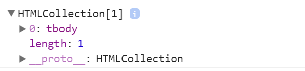
function tbody() {
var table = document.getElementById('table');
console.log(table.tBodies);
}
row.cells
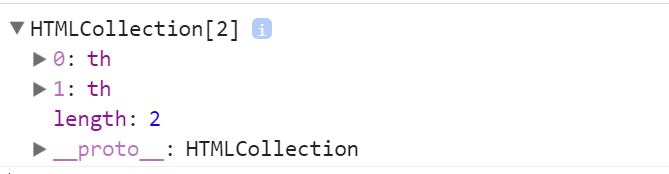
function cells(){
var row = document.getElementById('table').rows[0];
console.log(row.cells);
}
Поиск элементов
- getElementById
- getElementsByTagName
- getElementsByName
- getElementsByClassName
- querySelectorAll
- querySelector
- closest
getElementById
Оптимизация баузера (работает быстро). Внутреннее соответствие id -> элемент
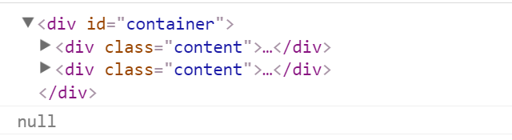
function getElementById(){
console.log(document.getElementById('container'));
console.log(document.getElementById('tag'));
}
getElementsByTagName
При изменении документа – изменяется и результат запроса
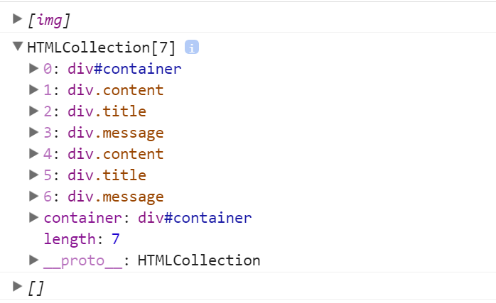
function getElementsByTagName(){
console.log(document.getElementsByTagName('img'));
console.log(document.getElementsByTagName('div'));
console.log(document.getElementsByTagName('bla'));
}
getElementsByName

function getElementsByName() {
console.log(document.getElementsByName('title__1'));
console.log(document.getElementsByName('content'));
console.log(document.getElementsByName('img'));
}
getElementsByClassName

function getElementsByClassName() {
console.log(document.getElementsByClassName('content'));
console.log(document.getElementsByClassName('title'));
console.log(document.getElementsByClassName('img'));
}
Оптимизация запросов getElementsBy...
Firefox + IE + Edge
Перебрать подэлементы document.body в порядке их появления в поддереве. Запоминать все найденные элементы во внутренней структуре данных, чтобы при повторном обращении обойтись без поиска.
- Перебрать подэлементы document.body в порядке их появления в поддереве
- Запоминать все найденные элементы во внутренней структуре данных, чтобы при повторном обращении обойтись без поиска
Оптимизация запросов getElementsBy...
Firefox + IE + Edge Пример
var elems = document.getElementsByTagName('div');
console.log(elems[0]);
console.log(elems[995]);
console.log(elems[500]);
console.log(elems.length);
- Браузер создаёт пустую «живую коллекцию» elems. Пока ничего не ищет
- Перебирает элементы, пока не найдёт первый div. Запоминает его и возвращает
- Перебирает элементы дальше, пока не найдёт элемент с индексом 995. Запоминает все найденные
- Возвращает ранее запомненный элемент с индексом 500, без дополнительного поиска
- Продолжает обход поддерева с элемента, на котором остановился (995) и до конца. Запоминает найденные элементы и возвращает их количество
Оптимизация запросов getElementsBy...
Webkit (Chrome + Safari + Opera)
Перебирать подэлементы document.body. Запоминать только один, последний найденный, элемент, а также, по окончании перебора – длину коллекции.
Отличия от предыдущего способа
- Кеширование используется меньше
- Запоминает только последний элемент
- Требует меньше памяти, но менее эффективнее при повторном доступе к предыдущим элементам
- Одинаково хорошо работает при последовательном переборе коллекции, без возврата к ранее выбранным
Оптимизация запросов getElementsBy...
Webkit (Chrome + Safari + Opera) Пример
var elems = document.getElementsByTagName('div');
console.log(elems[0]);
console.log(elems[995]);
console.log(elems[500]);
console.log(elems.length);
- Браузер создаёт пустую «живую коллекцию» elems. Пока ничего не ищет.
- Перебирает элементы, пока не найдёт первый div. Запоминает его и возвращает.
- Перебирает элементы дальше, пока не найдёт элемент с индексом 995. Запоминает его и возвращает.
- Браузер запоминает только последний найденный, поэтому не помнит об элементе 500. Нужно найти его перебором поддерева. Этот перебор можно начать либо с начала – вперед по поддереву, 500-й по счету) либо с элемента 995 – назад по поддереву, 495-й по счету. Так как назад разница в индексах меньше, то браузер выбирает второй путь и идёт от 995-го назад 495 раз. Запоминает теперь уже 500-й элемент и возвращает его.
- Продолжает обход поддерева с 500-го (не 995-го!) элемента и до конца. Запоминает число найденных элементов и возвращает его.
querySelectorAll
Перебирает все подэлементы внутри элемента и проверяет каждый элемент на соответствие запросу

//Результаты поиска сохраняются в кеше пока документ не изменится
function querySelectorAll(){
console.log(document.querySelectorAll('#container'));
console.log(document.querySelectorAll('div.content .title'));
}
querySelector

function querySelector(){
console.log(document.querySelector('#container'));
console.log(document.querySelector('div.content .title'));
}
closest

function closest() {
var link = document.getElementsByTagName('a')[0];
console.log(link.closest('.content'));
console.log(document.querySelector('#container'));
}
Основные свойства элементов
| attributes | возвращает все атрибуты элемента |
| classList | возвращает псевдомассив DOMTokenList |
| className | возвращает/задает атрибута class элемента |
| clientHeight | CSSheight + CSSpadding - horizontalScrollHeight |
| clientWidth | CSSwidth + CSSpadding - horizontalScrollWidth |
| data | содержимое тестового узла |
| firstElementChild | возвращает первый дочерный элемент объекта |
| id | возвращает идентификатор элемента в DOM |
| innerHTML | возвращает/задает HTML-содержимое в виде строки |
| hidden | возвращает/задает видимость узла |
| name | возвращает/задает атрибут name |
| outerHTML | возвращает HTML (при записи заменяется на новый) |
| scroll[Height...] | высота контента, включая содержимое, невидимое из-за прокрутки |
| shadowRoot | внутренний DOM элемента |
| tagName | возвращает HTML-тег элемента |
attributes

function attributes() {
var container = document.getElementById('container');
console.log(container.attributes);
var link = document.getElementsByTagName('a')[0];
console.log(link.attributes);
}
innerHTML & outerHTML
function html() {
var container = document.getElementById('container');
console.log(container.innerHTML);
console.log(container.outerHTML);
container.outerHTML = 'Text';
console.log(container.outerHTML);//empty
console.log(document.getElementById('container'));//null
}
Основные методы элемента
| hasAttribute | проверяет наличие атрибута |
| getAttribute | получает значение атрибута |
| setAttribute | устанавливает атрибут |
| removeAttribute | удаляет атрибут |
| contains | проверка вложенности элементов |
| matches | проверка соответствия указаному css-селектору |
| remove | удаляет узел из дерева DOM |
Работа с аттрибутами
function attribute() {
var link = document.getElementsByTagName('a')[0];
console.log(link.hasAttribute('href'));//true
console.log(link.getAttribute('href'));//http://google.com
console.log(link.getAttribute('class'));//link
link.setAttribute('href', 'habrahabr.ru');
console.log(link.getAttribute('href'));//habrahabr.ru
link.removeAttribute('href');
}
Пример matches
function matches() {
var link = document.getElementsByTagName('a')[0];
console.log(link.matches('a'));//true
console.log(link.matches('.link'));//true
console.log(link.matches('#container a'));//true
console.log(link.matches('.message a'));//true
console.log(link.matches('a.message'));//false
}
Добавление и удаление узлов
| createElement | Создает новый элемент с указанным тегом |
| createTextNode | Создает новый текстовый узел с указанным текстом |
| appendChild | Добавляет elem в конец дочерних элементов parentElem |
| insertBefore | Вставляет elem в коллекцию детей parentElem, перед элементом nextSibling |
| cloneNode | Клонирование узлов |
| removeChild | Удаляет elem из списка детей parentElem |
| replaceChild | Среди детей parentElem удаляет elem и вставляет на его место newElem |
Добавление элемента

function create(){
var div = document.createElement('div');
div.className = 'test';
div.id = 'test';
var container = document.querySelector('#container');
container.appendChild(div);
}
Клонирование элемента

function clone(){
var title = document.querySelector('.title');
console.log(title.cloneNode());
console.log(title.cloneNode(true));
}
Замена элемента
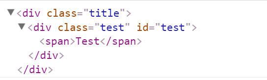
function replace() {
var title = document.querySelector('.title'),
h3 = title.firstElementChild;
var div = document.createElement('div');
div.className = 'test';
div.id = 'test';
div.innerHTML = 'Test';
title.replaceChild(div, h3);
console.log(title);
}
События
Браузерные события
- Событие – это сигнал от браузера о том, что что-то произошло.
- Тип события - это строка, определяющая тип действия, вызвавшего событие (mousemove, click..).
- Цель события - это объект, в котором возникло событие или с которым это событие связано(Window, Document и Element).
- Обработчик события - это функция, которая обрабатывает, или откликается на событие.
- Объект события - это объект, связанный с определенным событием и содержащий информацию об этом событии. Объекты событий передаются функции обработчика события в виде аргумента.
- Распространение события - это процесс, в ходе которого браузер решает, в каких объектах следует вызвать обработчики событий.
Обработчик события
Событию можно назначить обработчик, то есть функцию, которая сработает, как только событие произошло. Именно благодаря обработчикам JavaScript-код может реагировать на действия посетителя
Существует несколько способов назначения обработчика события
Использование атрибута HTML
Click me to change my text color
function myFunction() {
document.getElementById("text").style.color = "red";
}
Использование свойства DOM-объекта
Доступ к элементу через this
Внутри обработчика события this ссылается на текущий элемент, то есть на тот, на котором он сработал. Это можно использовать, чтобы получить свойства или изменить элемент.
//Нажми меня
addEventListener
element.addEventListener(event, handler[, phase]);
- event - Имя события, например click
- handler- Ссылка на функцию, которую надо поставить обработчиком
- phase - Необязательный аргумент, «фаза», на которой обработчик должен сработать
elem.addEventListener( "click" , function() {
console.log('Thank you!');
});
function thanks(){
console.log('Thank you!');
}
elem.addEventListener( "click" , thanks);
Еще пример addEventListener
<input id="elem" type="button" value="Нажми меня"/>
<script>
function handler1() {
alert('Спасибо!');
};
function handler2() {
alert('Спасибо ещё раз!');
}
elem.onclick = function() { alert("Привет"); };
elem.addEventListener("click", handler1); // Спасибо!
elem.addEventListener("click", handler2); // Спасибо ещё раз!
</script>
removeEventListener
Передается таже функция-обработчик, которая была назначена на событие
// передать те же аргументы, что были у addEventListener
element.removeEventListener(event, handler[, phase]);
elem.addEventListener( "click" , function() {alert('Спасибо!')});
// ....не сработает
elem.removeEventListener( "click", function() {alert('Спасибо!')});
elem.addEventListener( "click" , function() {alert('Спасибо!')});
// ....не сработает
elem.removeEventListener( "click", function() {alert('Спасибо!')});
function handler() {
alert( 'Спасибо!' );
}
input.addEventListener("click", handler);
// ....
input.removeEventListener("click", handler);
Создание события
- Event()
- EventTarget.dispatchEvent()
- CustomEvent()
Event
event = new Event(typeArg, eventInit);
- Тип события – может быть как своим, так и встроенным, к примеру "click".
- Флаги – объект вида { bubbles: true/false, cancelable: true/false }....
// create a look event that bubbles up and cannot be canceled
var ev = new Event("look", {"bubbles":true, "cancelable":false});
document.dispatchEvent(ev);
dispatchEvent
- Отправляет событие в общую систему событий
- Cобытие подчиняется тем же правилам поведения (захват и всплытие) как и непосредственно инициированные события
cancelled = !target.dispatchEvent(event)
//event - объект события, который инициализируется
//target - используется для инициализации Event.target
//и установки события, которое обработчик вызывает
//return - false если хотя бы один из обработчиков
//этого события вызовал preventDefault
<button id="elem" onclick="alert('Клик');">Автоклик</button>
<script>
var event = new Event("click");
elem.dispatchEvent(event);
</script>
CustomEvent
Идентичен Event(), НО у второго аргумента-объекта есть дополнительное свойство detail, в котором можно указывать дополнительную информацию
<h1 id="elem">Element</h1>
<script>
var elem = document.getElementById('elem');
elem.addEventListener("hello", function(event) {
console.log( event.detail.name );
}, false);
var event = new CustomEvent("hello", {
detail: { name: "something" }
});
elem.dispatchEvent(event);
</script>
Типы событий
- События мыши
- События документа Window
- События клавиатуры
- События формы и ЭУ
- События буфера обмена
- События перетаскивания
- События медиа
- События CSS
Объект события

Основные свойства и методы
| type | тип события |
| currentTarget | элемент, на котором сработал обработчик |
| target | целевой элемент (там, где произошло событие) |
| bubbles | является ли данное событие всплывающим |
| cancelable | является ли событие отменяемым |
| isTrusted | было ли событие инициировано действиями пользователя |
| preventDefault() | останавливает событие (если оно cancelable) без остановки высплытия |
| stopImmediatePropagation() | останавливает цепочку вызова событий для последующих слушателей DOM элемента и текущих событий |
| stopPropagation() | останавливает цепочку вызова событий для последующих слушателей DOM элемента (на текущем элементе все обработчики отработают) |
Всплытие событий

Пример всплытия событий

Метод stopImmediatePropagation

Метод stopPropagation
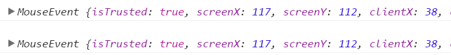
Метод preventDefault

События мыши
| click | нажатие на элемент левой кнопкой мыши |
| dblclick | двойное нажатие на элемент левой кнопкой мыши |
| contextmenu | нажатие на элемент правой кнопкой мыши |
| mouseover | при наведении мыши на элемент |
| mousedown | при нажатии мышью на элемент |
| mouseup | при отжатии мыши на элементе |
| mousemove | при движении мыши |
| onwheel | при передвижении колеса мыши над элементом |
Простой пример
Модификаторы shift, alt, ctrl, meta (Mac)
Координаты
Client[X,Y] vs Page[X, Y]

Получение информации о кнопке
События документа Window
| DOMContentLoaded | HTML загружен и обработан, DOM полностью построена и доступна |
| load | браузер загрузил все ресурсы |
| beforeunload/unload | при уходе со страницы |
| resize | браузер изменил размеры окна |
| error | при запуске/загрузке ресурса происходит ошибка |
Пример DOMContentLoaded
<script>
function ready() {
console.log( 'DOM готов' );
console.log( "Размеры картинки: "
+ img.offsetWidth + "x"
+ img.offsetHeight );
//не дожидаемся загрузки картинки ( 0x0 )
}
document.addEventListener("DOMContentLoaded", ready);
</script>
<img id="img" src="/logos/doodles/2016/holidays-2016-2748273943.gif">
Пример load
<script>
window.onload = function() {
console.log('Документ и все ресурсы загружены');
};
</script>
<iframe src="https://example.com/" style="height:60px"></iframe>
<script src="index.js"></script>
События клавиатуры
| keyup | отпускание клавиши |
| keydown | нажатие клавиши |
| keypress | приводит к появлению символа |
Пример keydown
Кроссбраузерный подход
// event.type должен быть keypress
function getChar(event) {
if (event.which == null) { // IE
if (event.keyCode < 32) return null; // спец. символ
return String.fromCharCode(event.keyCode)
}
if (event.which != 0 && event.charCode != 0) { // все кроме IE
if (event.which < 32) return null; // спец. символ
return String.fromCharCode(event.which); // остальные
}
return null; // спец. символ
}
//Код символа хранится в свойствах: charCode и which. Не совместимость
События форм и ЭУ
| blur | при потере элементов фокуса |
| change | по окончании изменении значения элемента формы |
| focus | при получении элементов фокуса |
| invalid | при получении элементом статуса invalid |
| select | при выборе пользователем элемента |
| submit | при отправке формы на сервер |
| input | срабатывает тут же при изменении значения текстового элемента |
Change
Для текстовых элементов означает, что событие произойдёт не при каждом вводе, а при потере фокуса
Invalid
События буфера обмена
| copy | копирование значения |
| paste | вставки значения |
| cut | вырезании значения |
DataTransfer
clipboardData использует объект dataTransfer
void dataTransfer.setData(format, data);
//text/plain
//text/uri-list
//text/html
DataTransfer.clearData([format]);
DOMString dataTransfer.getData(format);
Пример
<input type="text" id="text">
<script>
function onCopy(e) {
e.clipboardData.setData('text/plain', 'Something');
}
document.getElementById('text').addEventListener('copy', onKeyUp);
</script>
События перетаскивания
| drag | при перетаскивании элемента |
| dragstart | когда элемент начинает перемещаться |
| dragenter | когда перемещаемый элемент попадает на элемент-назначение |
| drop | после отпускания элемента |
| DataTransfer | объект используется для хранения данных, перетаскиваемых мышью во время операции drag and drop |
Алгоритм Drag’n’Drop
- Отслеживаем нажатие кнопки мыши на переносимом элементе при помощи события mousedown
- При нажатии – подготовить элемент к перемещению
- Отслеживаем движение мыши через mousemove
- Передвигаем переносимый элемент на новые координаты путём смены left/top и position:absolute
- При отпускании кнопки мыши (mouseup) – остановить перенос элемента
- Дополнительные действия, связанные с окончанием Drag’n’Drop
Пример
<div id="div1" ondrop="drop(event)" ondragover="allowDrop(event)"></div>
<img id="drag1" src="img.gif" draggable="true" ondragstart="drag(event)">
<script>
function allowDrop(ev) {
ev.preventDefault();
}
function drag(ev) {
ev.dataTransfer.setData("text", ev.target.id);
}
function drop(ev) {
ev.preventDefault();
var data = ev.dataTransfer.getData("text");
ev.target.appendChild(document.getElementById(data));
}
</script>
События медиа (video, image, audio...)
| onpause | медиа-объект приостанавливает выполнение программно или в ответ на действие пользователя |
| play | медиа-объект готов к началу выполнению |
| playing | медиа-объект выполняется |
| progress | возникает при изменении состояния получения данных медиа-объектом |
| volumechange | возникает при изменении уровня громкости |
Pause
<video id="myVideo" width="320" height="176" controls>
<source src="mov_bbb.mp4" type="video/mp4">
<source src="mov_bbb.ogg" type="video/ogg">
Your browser does not support HTML5 video.
</video>
<script>
var vid = document.getElementById("myVideo");
vid.onpause = function() {
alert("The video has been paused");
};
</script>
volumechange
<video controls id="myVideo">
<source src="mov_bbb.mp4" type="video/mp4">
<source src="mov_bbb.ogg" type="video/ogg">
Your browser does not support HTML5 video.
</video>
<script>
document.getElementById("myVideo").addEventListener("volumechange", myFunction);
function myFunction(e) {
alert(e.target.volume);//[0-1]
alert("The volume has been changed!");
}
</script>
События CSS
| transitionend | при завершении CSS-анимации |
/*
* Прослушиваем событие transitionend на определенном элементе,
* Затем, вызваем определенную функцию (showMessage)
*/
function showMessage() {
alert('Transition закончил свое выполнение');
}
var element = document.getElementById("slidingMenu");
element.addEventListener("transitionend", showMessage, false);
Event loop
JS vs Потоки
Javascript работает в одном потоке
- Текущая функция не может быть приостановлена
- Текущая функция должна завершить свое выполнение до начала выполнения другой функции
Модель событийного цикла

Общий стек вызовов функций
- Вызов любой функции создает контекст выполнения
- При вызове вложенной функции создается новый контекст
- Старый контекст сохраняется в специальной структуре
function f(b) {
var a = 12;
return a + b + 35;
}
function g(x) {
var m = 4;
return f(m * x);
}
g(21);
Алгоритм работы со стеком
- При вызывается g, создаётся область видимости, содержащая аргументы g и локальные переменные.
- При вызове f, создаётся вторая область видимости и помещается в стэк вперед первой, которая содержит аргументы f и её локальные переменные.
- Когда f возвращает результат, верхний элемент из стека удаляется.
- Когда g возвращает результат, контекст функции удаляется, и стэк будет пуст.
Куча
Объекты размещаются в куче. Куча — это ссылка на определённую неструктурированную области памяти.
Очередь событий
Очередь событий — это список событий, подлежащих обработке
- Каждое событие связано с некоторой функцией
- Когда на стэке освобождается достаточно места, событие извлекается из очереди и обрабатывается
- Обработка события состоит в вызове этой функции (создание начального контекста выполнения)
- Обработка события заканчивается, когда стек становится пустым.
Очередь событий
while(queue.waitForMessage()){
queue.processNextMessage();
}
Особенности event loop
Нулевые задержки
Задержка – это минимальное время, которое требуется среде выполнения на обработку запроса.
- Нулевая задержка не дает гарантии, что обработчик выполнится через 0 миллисекунд.
- Вызов setTimeout с аргументом 0 не завершится за указанное время.
- Выполнение зависит от количества ожидающих в очереде задач.
Никогда не блокируется
- Поток выполнения никогда не блокируется
- Обработка I/O осуществляется с помощью событий и/или функций обратного вызова
- В момент ожидания события могут обрабатыватья другие процессы (пользовательский ввод)
- Страница в браузере работает в одном потоке. Это значит, что браузер либо выполняет JS, либо рисует страницу (CSS-анимации, render, reflow)
Пример с timeline работы браузера

Смягчающее действие
Если событие обрабатывается слишком долго, то приложение в это время не имеет возможности обработать действия пользователя (например, скролл, или клик). Internet Explorer, в таком случае, выводит сообщение "A script on this page is causing Internet Explorer to run slowly"
Таймеры в js
Таймеры - это не sleep(), они создают события, которые используют Event Loop
- setTimeout(function, timeout) - не ранее чем через timeout
- setInterval(function, timeout) - не чаще чем через timeout
- Точность интервалов не гарантирована
- Если таймер содержит долгие вычисления while (true) {i++;}, то он задержит Event Loop
Пример
var timeMark = new Date;
setTimeout(function go() {
// выполнится через 100 мс
var diff = new Date - timeMark;
console.log(diff);
timeMark = new Date;
setTimeout(go, 100); // снова в очередь
}, 100); //положили go() в очередь через 100 мс
//101
//100
//102
//101
//103
//100
Event Loop простыми словами

Особенности
- Основан на событиях
- События складываются в очередь
- Ждем события, затем его выполняем
- События могут генерировать события
- Завершается при опустошении очереди
Пример event loop
$.get('/api/data.json', function(data) {
getFile(data.filename, function() {
alert('tada!');
});
showLoading('reading file');
});
showLoading('loading data');
Пример event loop: Запрос к серверу
$.get('/api/data.json', function(data) {//выполняется
getFile(data.filename, function() {
alert('tada!');
});
showLoading('reading file');
});
showLoading('loading data');//выполняется
Пример event loop: Ответ получен, функция читает файл
$.get('/api/data.json', function(data) {
getFile(data.filename, function() {//выполняется
alert('tada!');
});
showLoading('reading file');//выполняется
});
showLoading('loading data');
Пример event loop: Файл прочитан
$.get('/api/data.json', function(data) {
getFile(data.filename, function() {
alert('tada!');//выполняется
});
showLoading('reading file');
});
showLoading('loading data')
Плюсы и минусы
| + | - |
|---|---|
| отсутствие состояния "гонки" | процессороемкие задачи блокируют работу event loop |
| веб приложения тратят время на ожидание ввода-вывода | выполняется на 1 ядре, а остальные 3 простаивают |
| относительно проста для освоения | утечки памяти |
Если не хватает параллельности
параллельное выполнение кода JavaScript
- Dedicated workers (выделенные)
- SharedWorker (общие)
Dedicated workers
Особенности
- Объекты запускаются в изолированном потоке
- Выполняемый код должен храниться в отдельном файле
- Создается путем вызова конструктора
- Если указанный файл существует, то браузер создаст новый поток объекта Worker, загружаемый асинхронно
Алгоритм работы
var worker = new Worker('task.js');//инициализация
worker.postMessage(); //запуск
worker.postMessage('Hello World');//отправление сообщения воркеру
worker.terminate()//завершение работы
//или
this.close()// внутри объекта
Обмен сообщениями
Основной скрипт
var worker = new Worker('doWork.js');
worker.addEventListener('message', function(e) {
console.log('Worker said: ', e.data);
}, false);
worker.postMessage('Hello World'); // Send data to our worker.
Второй скрипт
self.addEventListener('message', function(e) {
self.postMessage(e.data);
}, false);
SharedWorker
- Создается путем вызова конструктора
- Идентифицируется по URL. Можно создать второй воркер из одного файла, добавив параметр в URL (worker.js?random=100)
- Работает с различными окнами, фреймами и файлами
Алгоритм работы
var myWorker = new SharedWorker("worker.js");
myWorker.port.start(); //вызывается в главном потоке
port.start(); //вызывается в рабочем потоке
Передача сообщений
squareNumber.onchange = function() {
myWorker.port.postMessage([squareNumber.value,squareNumber.value]);
console.log('Message posted to worker');
}
self.addEventListener('connect', function(e) {
var port = e.ports[0];
port.onmessage = function(e) {
var workerResult = 'Result: ' + (e.data[0] * e.data[1]);
port.postMessage(workerResult);
}
port.start();
});
myWorker.port.onmessage = function(e) {
result2.textContent = e.data[0];
console.log('Message received from worker');
}
Web Worke имеет доступ к:
- Объект navigator
- Объект location (только чтение)
- XMLHttpRequest
- Таймеры (setTimeout/setInterval)
- Кэш приложений
- Импорт внешних скриптов (метод importScripts)
- Создание других объектов Web Worker
Web Worker не имеет доступа к:
- Модель DOM
- Объект window
- Объект document
- Объект parent
Спасибо за внимание